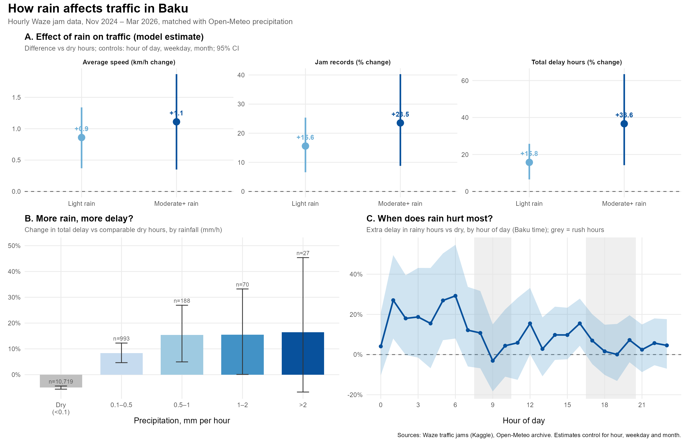
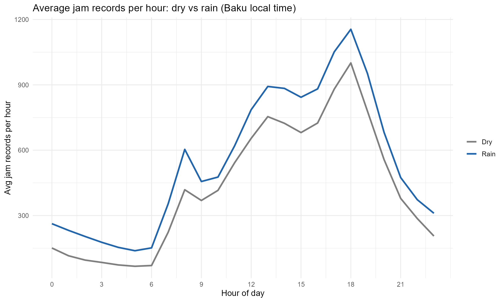

Every hour of traffic data is matched with Open-Meteo precipitation, then rainy hours are compared with dry ones at the same time of day, weekday and month.
Rain is split into light (0.1 to 1 mm per hour) and rainfall (1 mm per hour or more).

TODO: your result, for example “Rainfall of 1 mm/h or more adds X% to total delay (95% CI a to b).”
Average jam records per hour of the day, without any adjustment.

For each hour I count jam records, total delay and average speed. A quasi-Poisson model with hour of day, weekday and month as controls estimates the change caused by rain. Standard errors are clustered by day. Rain comes from one point in central Baku.